Kapitel 3 Showcase
Einige Beispiele, was man mit den Funktionen in der Programmiersprache R machen kann.
Graphische Darstellungen von Wolf Riepl (https://github.com/fjodor).
https://github.com/fjodor/dataviz_ideas
3.1 ggplot with emojis
# https://github.com/dill/emoGG
# devtools::install_github("dill/emoGG")
library(ggplot2)
library(emoGG)
emoji_search("tulip")## emoji code keyword
## 1929 tulip 1f337 flowers
## 1930 tulip 1f337 plant
## 1931 tulip 1f337 nature
## 1932 tulip 1f337 summer
## 1933 tulip 1f337 spring
## 4595 copyright a9 ip
## 5538 liechtenstein 1f1f1\\U0001f1ee li# tulips
ggplot(iris, aes(Sepal.Length, Sepal.Width, color = Species)) +
geom_emoji(emoji="1f337")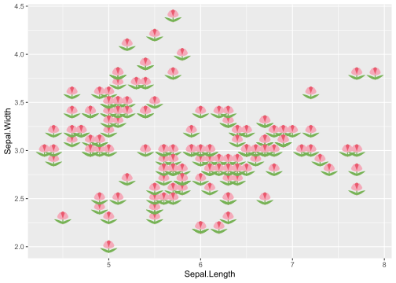
# cars
ggplot(mtcars, aes(wt, mpg))+ geom_emoji(emoji="1f697")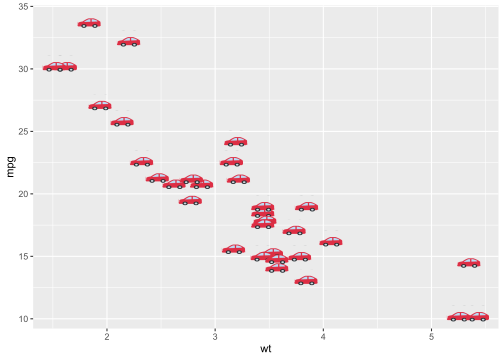
# random
posx <- runif(50, 0, 10)
posy <- runif(50, 0, 10)
ggplot(data.frame(x = posx, y = posy), aes(x, y)) + geom_emoji(emoji="1f63b")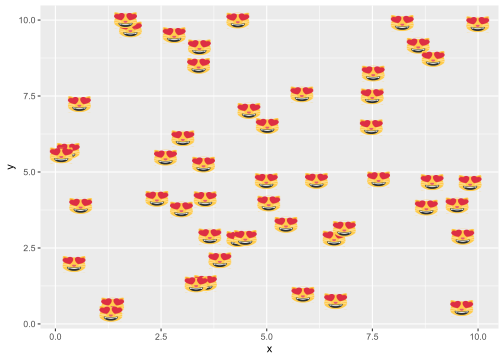
# big emoji in background
qplot(x=Sepal.Length, y=Sepal.Width, data=iris, geom="point") + add_emoji(emoji="1f337")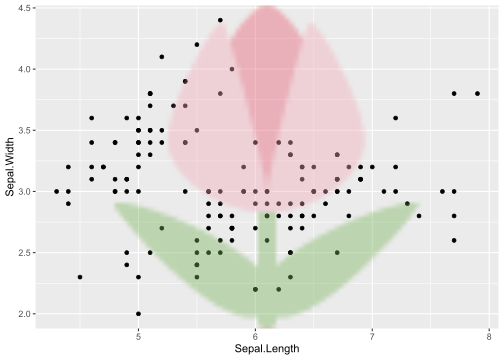
3.2 Data Preparation
We’re using data from Chart2000.com:
Music Charts 2000 - 2020
library(knitr)
library(kableExtra)
library(flexdashboard)
library(tidyverse)## -- Attaching packages --------------------------------------- tidyverse 1.3.1 --## v tibble 3.1.6 v dplyr 1.0.8
## v tidyr 1.2.0 v stringr 1.4.0
## v readr 2.1.2 v forcats 0.5.1
## v purrr 0.3.4## -- Conflicts ------------------------------------------ tidyverse_conflicts() --
## x dplyr::filter() masks stats::filter()
## x dplyr::group_rows() masks kableExtra::group_rows()
## x dplyr::lag() masks stats::lag()library(ggthemes)
library(DT)
library(plotly)##
## Attaching package: 'plotly'## The following object is masked from 'package:ggplot2':
##
## last_plot## The following object is masked from 'package:stats':
##
## filter## The following object is masked from 'package:graphics':
##
## layoutlibrary(EnvStats)##
## Attaching package: 'EnvStats'## The following objects are masked from 'package:stats':
##
## predict, predict.lm## The following object is masked from 'package:base':
##
## print.defaultlibrary(ggstatsplot)## You can cite this package as:
## Patil, I. (2021). Visualizations with statistical details: The 'ggstatsplot' approach.
## Journal of Open Source Software, 6(61), 3167, doi:10.21105/joss.03167library(ggtext)
knitr::opts_chunk$set(echo = FALSE)
all_songs <- read_csv(file = "data/chart2000-songyear-0-3-0062.csv",
na = c("", "-"))## Rows: 2100 Columns: 11## -- Column specification --------------------------------------------------------
## Delimiter: ","
## chr (2): artist, song
## dbl (9): year, position, indicativerevenue, us, uk, de, fr, ca, au
##
## i Use `spec()` to retrieve the full column specification for this data.
## i Specify the column types or set `show_col_types = FALSE` to quiet this message.attr(all_songs, "spec") <- NULLFrom the site https://chart2000.com/about.htm#fairuse we downloaded the file chart2000-songyear-0-3-0062, which you can also find on my github profile at https://github.com/fjodor/dataviz_ideas. It contains the top 100 songs for each year from 2000 to 2020.
library(knitr)
library(kableExtra)
library(flexdashboard)
library(tidyverse)
library(ggthemes)
library(DT)
library(plotly)
library(EnvStats)
library(ggstatsplot)
library(ggtext)
knitr::opts_chunk$set(echo = FALSE)
all_songs <- read_csv(file = "data/chart2000-songyear-0-3-0062.csv",
na = c("", "-"))
attr(all_songs, "spec") <- NULLFirst we filter out the most successful artists: The Top 5 in terms of total score, i. e. the sum of Indicative Revenue (IR). According to https://chart2000.com/about.htm, IR is an attempt to measure the complete revenue generated by a song or album over a certain period. It does take inflation and currency conversion into account and can approximately be related to total revenue generated across the whole music chain in thousands of dollars.
top_artists <- all_songs %>%
group_by(artist) %>%
summarise(total_score = sum(indicativerevenue)) %>%
arrange(desc(total_score)) %>%
head(n = 5) %>%
pull(artist)
songs <- all_songs %>%
filter(artist %in% top_artists) %>%
mutate(artist = fct_infreq(artist),
indicativerevenue = round(indicativerevenue))
datatable(songs, filter = "top")3.3 First Boxplot:
Some tweaks to a basic ggplot2 chart
using ggthemes by Jeffrey B. Arnold
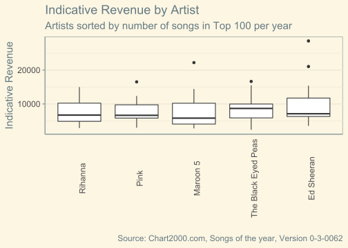
This is our first attempt at summarizing indicative revenue of the Top 10 artists.
What we have already done:
- Chosen a new theme: ggthemes::theme_solarized(). Thanks to package author Jeffrey B. Arnold and contributors
- Increased font size
- Ordered artists by total number of songs in top 100 for each year 2000 - 2020
- Rotated x axis labels
- Removed x axis tickmarks
- Removed vertical grid lines
theme_set(theme_solarized(base_size = 15))
theme_update(axis.text.x = element_text(angle = 90),
axis.ticks.x = element_blank(),
panel.grid.major.x = element_blank())ggplot(songs, aes(x = artist, y = indicativerevenue)) +
geom_boxplot() +
labs(x = "", y = "Indicative Revenue",
title = "Indicative Revenue by Artist",
subtitle = "Artists sorted by number of songs in Top 100 per year",
caption = "Source: Chart2000.com, Songs of the year, Version 0-3-0062")3.4 Show Ns Visually
by specifying varwidth = TRUE
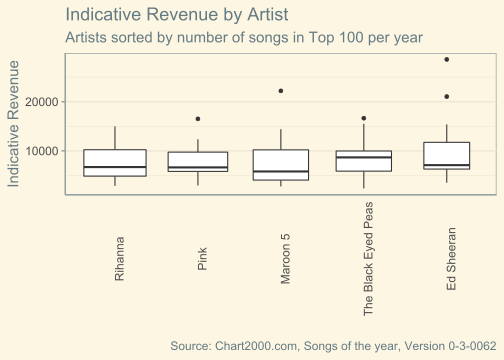
The “trick” here is simply the varwidth = TRUE argument in the geom_boxplot() call.
ggplot(songs, aes(x = artist, y = indicativerevenue)) +
geom_boxplot(varwidth = TRUE) +
labs(x = "", y = "Indicative Revenue",
title = "Indicative Revenue by Artist",
subtitle = "Artists sorted by number of songs in Top 100 per year",
caption = "Source: Chart2000.com, Songs of the year, Version 0-3-0062")3.5 Show Ns Numerically
using EnvStats::stat_n_text() by Steven Millard and Alexander Kowarik
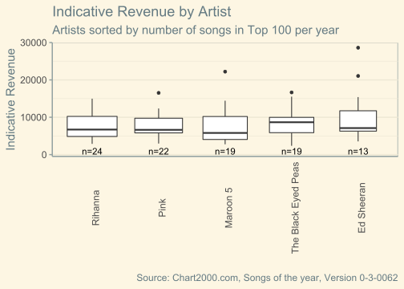
We could, of course, calculate Ns and display them using geom_text() or geom_label(), but we’ll use the convencience function stat_n_text() from the EnvStats package by Steven Millard and Alexander Kowarik instead.
ggplot(songs, aes(x = artist, y = indicativerevenue)) +
geom_boxplot(varwidth = TRUE) +
labs(x = "", y = "Indicative Revenue",
title = "Indicative Revenue by Artist",
subtitle = "Artists sorted by number of songs in Top 100 per year",
caption = "Source: Chart2000.com, Songs of the year, Version 0-3-0062") +
stat_n_text(y.pos = 900)3.6 Show Summary Statistics on Hover (Mouse-Over)
using plotly by Carson Sievert
Note that plotly uses a different calculation method, e. g. a different definition of outliers.
songs %>%
plot_ly(x = ~artist, y = ~indicativerevenue,
type = "box")3.7 Label Outliers
via a user-defined function and geom_text()
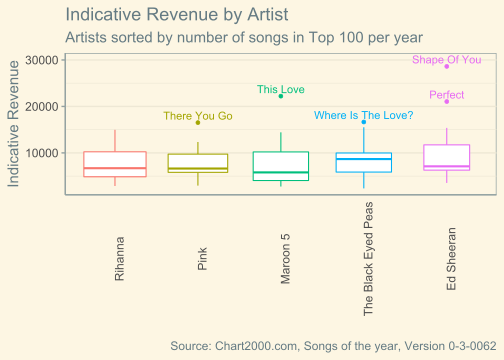
A user-defined function (found on Stackoverflow, answer by JasonAizkalns) returns songs of outliers, NA otherwise. This newly calculated variable is passed to the geom_text() function.
Introducing color for a clearer group distinction. In this case we suppress the color legend, as the groups should be clear from the x axis labels.
is_outlier <- function(x) {
return(x < quantile(x, 0.25) - 1.5 * IQR(x) | x > quantile(x, 0.75) + 1.5 * IQR(x))
}
songs %>%
group_by(artist) %>%
mutate(outlier = ifelse(is_outlier(indicativerevenue), song, NA)) %>%
ggplot(aes(x = artist, y = indicativerevenue, color = artist)) +
geom_boxplot(varwidth = TRUE) +
geom_text(aes(label = outlier), na.rm = TRUE, nudge_y = 1500) +
labs(x = "", y = "Indicative Revenue",
title = "Indicative Revenue by Artist",
subtitle = "Artists sorted by number of songs in Top 100 per year",
caption = "Source: Chart2000.com, Songs of the year, Version 0-3-0062") +
scale_color_discrete(guide = NULL)3.8 Display Individual Data Points
using geom_jitter()
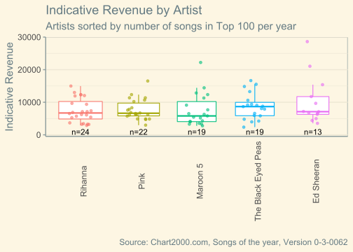
You can get the same boxplot for different distributions, e. g. a normal distribution (most data points around the mean) vs. a u-shaped distribution (two peaks: one below and one above the mean, with very few data points near the mean).
So displaying all data points gives a better sense of the underlying distributions. It combines macro and micro levels. Inspired by Edward Tufte, see his great book Envisioning Information.
Note the use of alpha (opacity), width and height in geom_jitter(), which reduces overplotting.
ggplot(songs, aes(x = artist, y = indicativerevenue, color = artist)) +
geom_boxplot(varwidth = TRUE, outlier.color = NA) +
geom_jitter(alpha = 0.6, width = 0.2, height = 0) +
labs(x = "", y = "Indicative Revenue",
title = "Indicative Revenue by Artist",
subtitle = "Artists sorted by number of songs in Top 100 per year",
caption = "Source: Chart2000.com, Songs of the year, Version 0-3-0062") +
scale_color_discrete(guide = NULL) +
stat_n_text(y.pos = 900)You could use plotly here again to display information about songs on hover. At the moment, a hack is needed to remove outliers from the boxplot - maybe support for that will improve in a future version of plotly. Plotly’s way seems to be to display the data points side-by-side to the boxplot, not overlay it.
3.9 Use Aesthetics to Include Information on Another Variable
Combining shape and color, using RColorBrewer by Erich Neuwirth
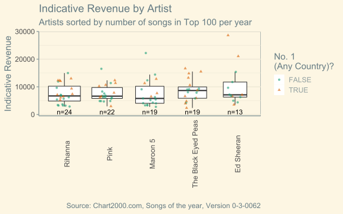
- Aesthetics for color and shape defined inside geom_jitter() (otherwise, there would be separate boxplots for the groups)
- Two aesthetics represented by one legend, as they refer to the same variable and are named the same
- Using RColorBrewer by Erich Neuwirth
songs %>%
rowwise() %>%
mutate(no1 = any(c_across(us:au) == 1, na.rm = TRUE)) %>%
ggplot(aes(x = artist, y = indicativerevenue)) +
geom_boxplot(varwidth = TRUE, outlier.color = NA) +
geom_jitter(alpha = 0.6, width = 0.2, height = 0,
aes(shape = no1, color = no1)) +
labs(x = "", y = "Indicative Revenue",
title = "Indicative Revenue by Artist",
subtitle = "Artists sorted by number of songs in Top 100 per year",
caption = "Source: Chart2000.com, Songs of the year, Version 0-3-0062") +
scale_color_brewer(palette = "Dark2",
name = "No. 1\n(Any Country)?") +
scale_shape_discrete(name = "No. 1\n(Any Country)?") +
stat_n_text(y.pos = 900)3.10 Add Means
for comparison to medians
## Warning: Removed 5 rows containing missing values (geom_segment).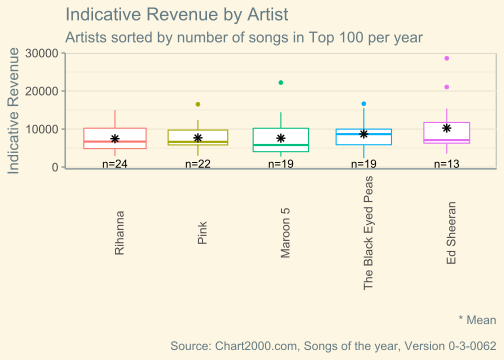
Interesting to see how in some cases (The Black Eyed Peas) median and mean seem to overlap, while in other cases (Ed Sheeran) there is a notable gap between median and mean. As is often the case, the mean is considerably higher, as it is influenced by outliers at the high end of the range of values.
Here I’d rather not show the individual data points to avoid information overflow. This chart focuses on summary statistics.
ggplot(songs, aes(x = artist, y = indicativerevenue, color = artist)) +
geom_boxplot(varwidth = TRUE) +
# geom_jitter(alpha = 0.6, width = 0.2, height = 0) +
stat_summary(fun = "mean", color = "black", shape = 8) +
labs(x = "", y = "Indicative Revenue",
title = "Indicative Revenue by Artist",
subtitle = "Artists sorted by number of songs in Top 100 per year",
caption = "* Mean\n\nSource: Chart2000.com, Songs of the year, Version 0-3-0062") +
scale_color_discrete(guide = NULL) +
stat_n_text(y.pos = 900)3.11 Calculate and Display Statistical Tests for Group Differences
using ggstatsplot by Indrajeet Patil
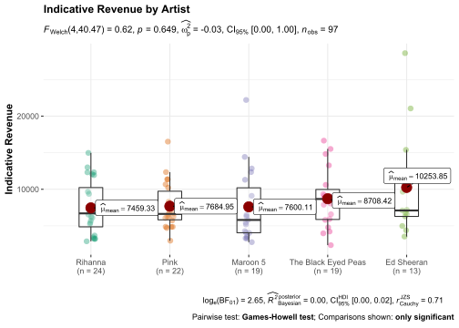
The ggstatsplot package by Indrajeet Patil is very powerful and flexible, well integrated with ggplot2 and well documented, see help(package = “ggstatsplot”).
Note that this package adds a large number of dependencies.
There are several tests to choose from, including non-parametric, robust and Bayesian.
See ?ggbetweenstats() and Website Documentation.
ggstatsplot::ggbetweenstats(
data = songs,
x = artist, xlab = "",
y = indicativerevenue,
ylab = "Indicative Revenue",
plot.type = "box",
type = "p",
conf.level = 0.95,
title = "Indicative Revenue by Artist"
)3.12 Group Differences:
Example for a significant test

While Ed Sheeran reached the highest average indicative revenue, he also recorded a much higher standard deviation. Therefore, only Justin Timberlake averaged significantly higher than Miley Cyrus in this comparison. Note the p value correction for multiple comparisons (corrected Holm method).
songs2 <- all_songs %>%
filter(artist %in% c("Ed Sheeran", "Justin Timberlake", "Miley Cyrus"))
ggstatsplot::ggbetweenstats(
data = songs2,
x = artist, xlab = "",
y = indicativerevenue,
ylab = "Indicative Revenue",
plot.type = "box",
type = "p",
conf.level = 0.95,
title = "Indicative Revenue by Artist"
)3.13 Use Images as Labels
via ggtext by Claus Wilke
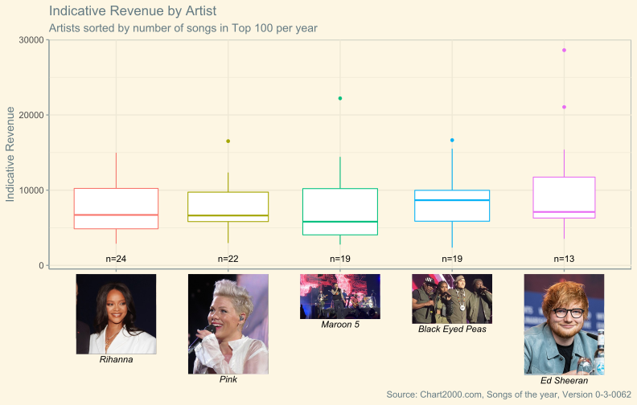
This is made possible by Claus Wilke’s excellent ggtext package.
Downloaded the files beforehand and stored them in the report / dashboard folder.
A named vector of labels is passed to scale_x_discrete(); besides, theme(axis.text.x) needs an element_markdown() function.
# Download and rename files
labels <- c(Rihanna = "<img src='pictures/Rihanna.jpg'
width = '100' /><br>*Rihanna*",
Pink = "<img src='pictures/Pink.jpg'
width = '100' /><br>*Pink*",
'Maroon 5' = "<img src='pictures/Maroon_5.jpg'
width = '100' /><br>*Maroon 5*",
'The Black Eyed Peas' =
"<img src='pictures/Black_Eyed_Peas.jpeg'
width = '100' /><br>*Black Eyed Peas*",
'Ed Sheeran' = "<img src='pictures/Ed_Sheeran.jpg'
width = '100' /><br>*Ed Sheeran*"
)
ggplot(songs, aes(x = artist, y = indicativerevenue, color = artist)) +
geom_boxplot(varwidth = TRUE) +
labs(x = "", y = "Indicative Revenue",
title = "Indicative Revenue by Artist",
subtitle = "Artists sorted by number of songs in Top 100 per year",
caption = "Source: Chart2000.com, Songs of the year, Version 0-3-0062") +
scale_color_discrete(guide = NULL) +
scale_x_discrete(name = NULL, labels = labels) +
stat_n_text(y.pos = 900) +
theme_solarized(base_size = 14) +
theme(axis.text.x = element_markdown(color = "black", angle = 0))